Regression Inference
FMB819: R을 이용한 데이터분석
Today’s Agenda
Part 1 — 회귀 테이블, 어떻게 읽는가?
- 표준 오차(SE): 추정값이 얼마나 불안정한가?
- 검정 통계량 & p-값: 이 결과가 우연일 확률은?
- 신뢰 구간: 진짜 값이 어느 범위에 있는가?
Part 2 — 회귀 계수, 언제 믿을 수 있는가?
- 고전적 회귀 모형(CRM) 4가지 가정
- 누락 변수 편향(OVB): 가장 위험한 함정
핵심 질문: \(b_k = 8.9\)라는 숫자, 그냥 믿어도 되는가?
큰 그림: 우리가 하고 싶은 것
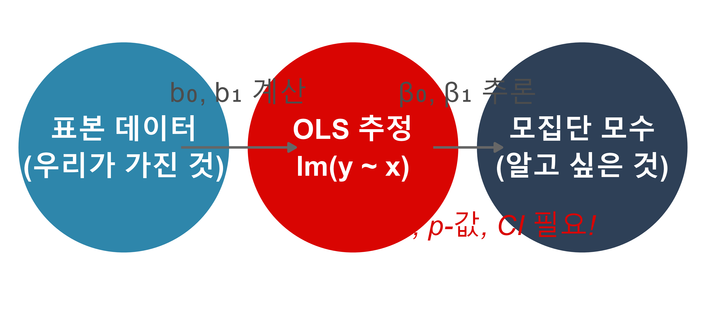
- 지금까지: 표본 데이터로 \(b_0, b_1\) 계산 (OLS)
- 오늘: 이 \(b_k\)로 진짜 \(\beta_k\)를 어떻게 추론하는가?
- 다른 표본을 썼다면 \(b_k\)가 달라졌을 것 → 이 불확실성을 정량화해야 함
분석 예제: STAR 실험
- Tennessee STAR 프로젝트: 학생을 무작위 배정으로 소규모/일반 학급에 배치
- 핵심 질문: 소규모 학급이 수학 성적을 높이는가?
\[\text{math score}_i = \beta_0 + \beta_1 \cdot \text{small}_i + \varepsilon_i\]
- \(b_\text{small} \approx 8.9\): 소규모 학급 학생이 수학 점수가 약 9점 높다
- 하지만 이게 우연일 수도 있지 않을까? → 추론(inference) 필요
표본마다 \(b_k\)는 달라진다
핵심 직관: STAR 실험 참가 학생 중 다른 1,000명을 뽑았다면?
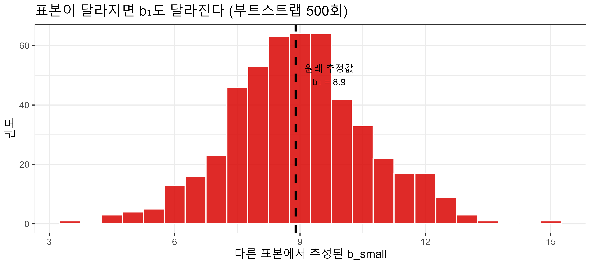
- 이 분포의 퍼짐 정도 = 추정값의 불안정성 = 표준 오차(SE)
- 분포가 좁을수록 → 추정이 안정적 → SE 작음
회귀 테이블 이해하기
# A tibble: 2 × 5
term estimate std.error statistic p.value
<chr> <dbl> <dbl> <dbl> <dbl>
1 (Intercept) 484. 1.15 421. 0
2 smallTRUE 8.90 1.68 5.30 0.000000123| 열 이름 | 계산 방법 | 해석 |
|---|---|---|
estimate |
OLS 추정 | “우리 표본”에서 계산된 \(b_k\) |
std.error |
\(\hat{SE}(b_k)\) | 표본마다 \(b_k\)가 얼마나 달라지는가? |
statistic |
\(b_k \div \hat{SE}(b_k)\) | 0에서 몇 표준편차 떨어져 있는가? |
p.value |
양측 검정 | \(H_0: \beta_k = 0\)이 맞다면, 이만큼 극단적 결과가 나올 확률 |
→ 각 항목을 순서대로 이해해보자
① 표준 오차 (Standard Error)
SE: 추정값 \(b_k\)의 표본 분포의 표준편차
= “실험을 반복하면 \(b_k\)가 얼마나 달라지는가?”
SE에 영향을 주는 요인:
SE가 작아지는 경우 ✅
- 표본이 클수록 (\(n \uparrow\))
- 데이터가 회귀선 주변에 조밀할수록 (\(\sigma_\varepsilon^2 \downarrow\))
- \(x\)의 분산이 클수록 (\(\sigma_x^2 \uparrow\))
직관
마치 동전 던지기에서
표본이 클수록 앞면 비율이
50%에 수렴하는 것과 같음.
→ 더 많은 데이터 = 더 안정적인 추정
STAR 예제:
\(\hat{SE}(b_\text{small}) = 1.68\)
→ 표본이 바뀌어도 \(b_\text{small}\)은 대략 \(\pm 3.4\) 범위 내에 있을 것
SE: 이론 vs. 시뮬레이션
부트스트랩으로 직접 확인해보자
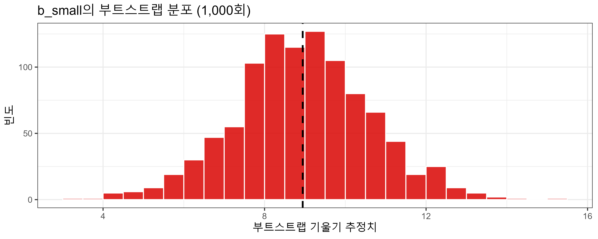
| 방법 | SE 값 |
|---|---|
| 회귀 테이블 (이론) | 1.68 |
| 부트스트랩 (시뮬) | 1.674 |
두 방법이 거의 동일한 값을 줌 ✅
→ 이론과 시뮬레이션이 수렴
Task 1
\(b_\text{small}\)의 부트스트랩 분포를 직접 생성하고 시각화해보자.
Step 1. STAR 데이터 로드 슬라이드의 코드로 star_df 준비.
Step 2. 부트스트랩 분포 생성:
Step 3. 시각화 및 요약 통계:
Step 4. 부트스트랩 SE가 회귀 테이블의 std.error와 얼마나 가까운가? 왜 비슷한가?
② 검정 통계량 (t-statistic)
핵심 질문: “\(b_\text{small} = 8.9\)가 우연히 나왔을 수도 있는가?”
\[H_0: \beta_\text{small} = 0 \quad \text{(소규모 학급은 효과 없음)}\] \[H_A: \beta_\text{small} \neq 0 \quad \text{(소규모 학급은 효과 있음)}\]
왜 \(b_k\)를 그대로 쓰지 않고 \(b_k / SE\)를 쓰는가?
비유: 키 차이
- \(b_k = 3\)cm 차이
- SE = 0.5cm → 매우 확실한 차이
- SE = 10cm → 불확실한 차이
→ 크기(b)만으로는 유의미한지 판단 불가
→ SE로 나눠서 “몇 표준편차 차이인가?” 로 표준화
STAR 예제:
\[t = \frac{b_\text{small}}{\hat{SE}(b_\text{small})} = \frac{8.895}{1.384} \approx 6.4\]
→ 추정값이 0에서 6.4 표준편차 떨어져 있음
→ \(H_0\)이 맞다면 이런 극단적 값이 나오기 매우 어려움
③ p-값 (p-value)
p-값: “\(H_0\)이 사실이라면, 관측된 검정 통계량만큼 극단적인 값이 나올 확률”
null_distribution <- star_df |>
mutate(small = as.numeric(small)) |>
specify(formula = math ~ small) |>
hypothesize(null = "independence") |>
generate(reps = 1000, type = "permute") |>
calculate(stat = "slope") |>
mutate(test_stat = stat / sd(bootstrap_distrib$stat))
p_value <- mean(abs(null_distribution$test_stat) >= observed_stat)
p_value[1] 0- p-값 ≈ 0 → 어떤 \(\alpha\) (0.10, 0.05, 0.01)에서도 \(H_0\) 기각
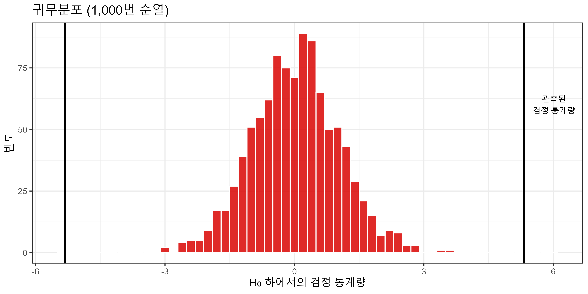
p-값에 대한 흔한 오해 ⚠️
p-값은 자주 잘못 해석됨. MBA 실무에서 반드시 알아야 할 것:
| ❌ 잘못된 해석 | ✅ 올바른 해석 |
|---|---|
| “\(H_0\)이 참일 확률” | “\(H_0\)이 참이라면, 이만큼 극단적 결과가 나올 확률” |
| “p < 0.05이면 중요한 발견” | 통계적 유의성 ≠ 실용적 중요성 |
| “p > 0.05이면 효과 없음” | 효과가 없다는 증거 ≠ 효과가 없다는 증명 |
| “p가 작을수록 효과가 크다” | p-값은 효과 크기와 무관 |
비유: 법정에서 “무죄 판결”이 “무죄의 증명”이 아닌 것처럼,
\(H_0\) 기각 실패는 “귀무가설이 맞다”는 뜻이 아님.
핵심: p-값은 유의성 판단 도구이지, 효과의 크기나 중요성 척도가 아님.
항상 계수 크기(effect size) 와 신뢰 구간 을 함께 봐야 함.
④ 신뢰 구간 (Confidence Interval)
\[\text{CI}_{95\%} = \left[b_k - 1.96 \times \hat{SE}(b_k),\;\; b_k + 1.96 \times \hat{SE}(b_k)\right]\]
왜 1.96인가? → 표준 정규분포에서 중간 95% 구간의 경계값
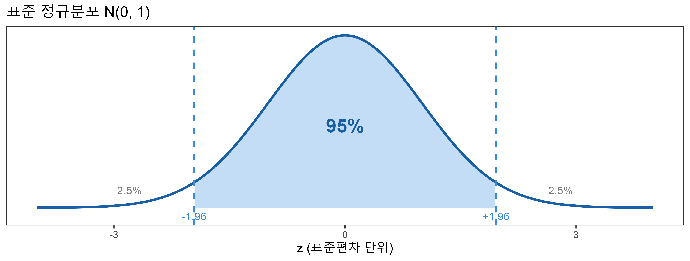
| 신뢰수준 | z-값 | 의미 |
|---|---|---|
| 90% | ±1.645 | 100번 반복하면 90번은 진짜 \(\beta\)를 포함하는 구간 |
| 95% | ±1.96 | 통상 사용 기준 |
| 99% | ±2.576 | 더 넓은 구간 — 더 보수적 |
신뢰 구간: 올바른 해석
STAR 예제 결과:
# A tibble: 1 × 5
estimate std.error conf.low conf.high p.value
<dbl> <dbl> <dbl> <dbl> <dbl>
1 8.90 1.68 5.60 12.2 0.000000123✅ 올바른 해석:
“소규모 학급 효과의 95% 신뢰 구간은 [6.2, 11.6]이다.
즉, 동일한 방식으로 100번 반복하면 약 95번은 이 구간이 진짜 \(\beta_\text{small}\)을 포함한다.”
❌ 틀린 해석:
“\(\beta_\text{small}\)이 [6.2, 11.6] 안에 있을 확률이 95%다.”
→ \(\beta_\text{small}\)은 하나의 고정된 값. 확률의 문제가 아님!
실용적 요점: CI가 0을 포함하지 않으면 → 5% 수준에서 통계적으로 유의
신뢰 구간: 세 가지 계산 방법 비교
# A tibble: 1 × 2
conf.low conf.high
<dbl> <dbl>
1 5.60 12.2lower.smallTRUE upper.smallTRUE
5.602393 12.187993 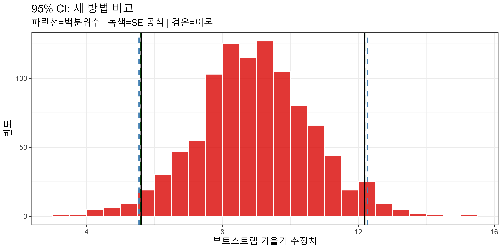
세 방법 모두 거의 동일한 구간 → 이론과 시뮬레이션이 수렴 ✅
Task 2
Task 1의 부트스트랩 분포를 활용하여 신뢰 구간을 직접 계산해보자.
Step 1. 백분위수 방법으로 95% CI 계산:
Step 2. SE 공식 방법으로 CI 계산 후 이론 기반 결과와 비교:
Step 3. 신뢰수준을 99% 로 바꾸면 구간이 어떻게 달라지는가? 왜 그런가?
이론 기반 추론: R이 실제로 하는 일
시뮬레이션 기반은 직관적이지만, R이 실제 쓰는 방법은 이론 기반.
이론적 근거 (CLT):
\[\frac{b_k - \beta_k}{\hat{SE}(b_k)} \xrightarrow{n \to \infty} t_{n-k-1} \approx N(0, 1)\]
→ 표본이 충분히 크면 표준화된 회귀 계수는 정규 분포 로 수렴
| 시뮬레이션 기반 | 이론 기반 | |
|---|---|---|
| 직관 | ★★★ | ★★ |
| 계산 속도 | 느림 | 빠름 |
| 추가 가정 | 적음 | 정규성·등분산 등 |
| R 기본값 | 아니오 | 예 |
→ 대표본(n > 30)에서 두 방법의 결과는 사실상 동일
여러 모형 결과 한눈에 보기: 회귀 테이블
reg1 <- lm(math ~ small, data = star_df)
reg2 <- lm(math ~ small + gender, data = star_df)
reg3 <- lm(read ~ small, data = star_df)
reg4 <- lm(read ~ small + gender, data = star_df)
export_summs(reg1, reg2, reg3, reg4,
model.names = c("수학(1)", "수학(2)", "독해(1)", "독해(2)"),
coefs = c("절편" = "(Intercept)",
"소규모 학급" = "smallTRUE",
"남학생" = "gendermale"))| 수학(1) | 수학(2) | 독해(1) | 독해(2) | |
|---|---|---|---|---|
| 절편 | 484.45 *** | 488.85 *** | 435.76 *** | 439.62 *** |
| (1.15) | (1.43) | (0.75) | (0.93) | |
| 소규모 학급 | 8.90 *** | 8.94 *** | 5.37 *** | 5.41 *** |
| (1.68) | (1.67) | (1.09) | (1.09) | |
| 남학생 | -8.56 *** | -7.49 *** | ||
| (1.67) | (1.09) | |||
| N | 3359 | 3359 | 3359 | 3359 |
| R2 | 0.01 | 0.02 | 0.01 | 0.02 |
| *** p < 0.001; ** p < 0.01; * p < 0.05. | ||||
회귀 테이블 읽는 법: 체크리스트
표의 구조:
| 위치 | 내용 | 해석 |
|---|---|---|
| 계수 행 | \(\hat{\beta}_k\) | 독립변수 1단위 증가 시 종속변수 변화 |
| 괄호 안 | \(\hat{SE}(b_k)\) | 추정의 불확실성 |
| \(*\), \(**\), \(***\) | 유의수준 | \(*\): 10%, \(**\): 5%, \(***\): 1% |
| \(N\) | 관측치 수 | 표본 크기 |
| \(R^2\) | 설명력 | 높다고 좋은 게 아님! |
실전 판독 순서:
- 계수의 부호(+/-) 와 크기 확인 → 경제적 의미 해석
- SE(표준오차) 와 별(*) 확인 → 통계적 유의성 판단
- \(|\text{t}| > 2\) 이면 5% 수준에서 유의 (1.96 ≈ 2)
- CI가 0을 포함하지 않는지 확인 → 동일한 유의성 판단
⚠️ 별(***)이 많다고 좋은 분석이 아니다!
계수의 해석이 타당한가? 가 더 중요
Classical Regression Model
회귀 계수, 언제 믿을 수 있는가?
문제: 회귀 계수와 p-값은 가정이 충족될 때만 믿을 수 있음
4가지 핵심 가정 (중요도 순서)
| 순위 | 가정 | 한 줄 요약 | 위반 시 결과 |
|---|---|---|---|
| 🔴 ① | 외생성 | 오차항 ⊥ 설명변수 | 계수 자체가 틀림 |
| 🟠 ② | i.i.d. | 관측치가 독립·동일 분포 | 표본 대표성 상실 |
| 🟡 ③ | 등분산성 | 오차 분산이 일정 | SE 편향 → p-값 신뢰 불가 |
| 🟢 ④ | 정규성 | 오차가 정규 분포 | 소표본에서만 문제 |
우선순위: ① >> ③ > ② >> ④
① 외생성이 무너지면, SE를 아무리 정확히 추정해도 계수 자체가 틀림
가정 ①: 외생성 (Exogeneity)
\[E[\varepsilon_i \mid x_i] = 0\]
직관: “\(x\)의 값을 알아도, 오차의 평균은 여전히 0이어야 한다”
✅ 가정 충족 (STAR 실험)
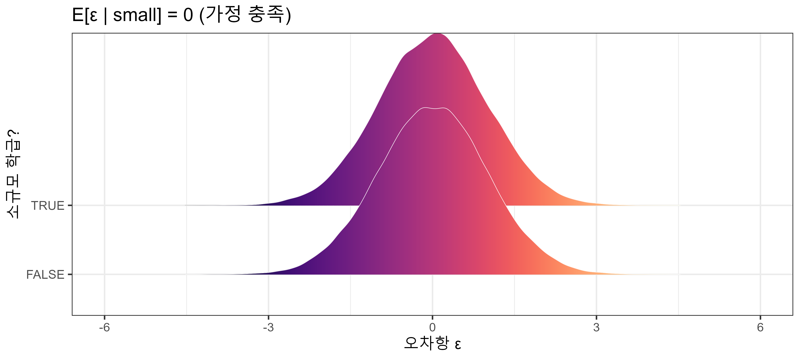
❌ 가정 위반 (관찰 연구)

STAR 실험: 무작위 배정 → 소규모 배정이 학생 능력·가정환경과 무관 → 외생성 보장
가장 위험한 함정: 누락 변수 편향 (OVB)
사례: 교육이 임금에 미치는 영향 분석
\[\text{wage}_i = \beta_0 + \beta_1 \cdot \text{education}_i + \varepsilon_i\]
문제: 관찰되지 않는 “능력” (\(a_i\))이 \(\varepsilon_i\)에 숨어있음
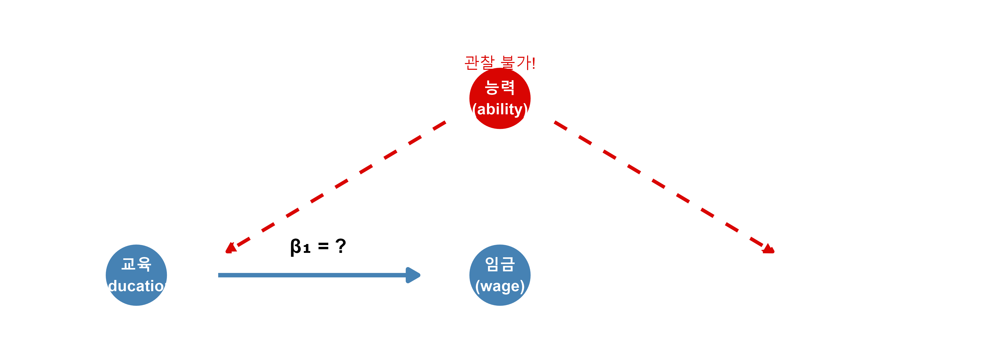
- 능력 ↑ → 임금 ↑ ✓ / 능력 ↑ → 교육 ↑ ✓
- 능력을 모형에서 빠뜨리면 → \(b_1\)이 교육 효과를 과대추정
OVB 공식으로 편향 방향 파악하기
\[\mathbb{E}(b_1) = \underbrace{\beta_1}_{\text{진짜 효과}} + \underbrace{\delta_1 \times \frac{Cov(x, \tilde{z})}{Var(x)}}_{\text{편향 (OVB)}}\]
- \(\delta_1\) = 누락 변수 \(\tilde{z}\)가 \(y\)에 미치는 효과
- \(Cov(x, \tilde{z})\) = 설명변수 \(x\)와 누락 변수 \(\tilde{z}\)의 공분산
편향 방향 판단:
| 누락 변수가 임금에 미치는 영향 | 누락 변수와 교육의 관계 | OVB 방향 |
|---|---|---|
| 양(+) | 양(+) | 과대추정 (↑) |
| 양(+) | 음(-) | 과소추정 (↓) |
| 음(-) | 양(+) | 과소추정 (↓) |
| 음(-) | 음(-) | 과대추정 (↑) |
교육-임금 예:
능력 → 임금(+), 능력 → 교육(+) → OVB > 0 → \(b_1\) 과대추정
“교육 1년 = 임금 10% 증가”라고 말할 때, 실제로는 능력 효과가 혼재!
OVB 해결책: 무엇을 할 수 있는가?
관찰 연구에서 OVB를 다루는 방법들:
1. 통제 변수 추가 (가장 쉬움)
- 능력 대리변수(IQ 점수, GPA 등) 포함
- 완벽한 해결책은 아님 — 여전히 관찰 불가능한 변수 존재
2. 자연 실험 (Natural Experiment)
- 마치 “우연한 무작위 배정”이 있었던 상황 활용
- 예: 병역 의무(Angrist 1990), 학교 입학 기준 날짜
3. 도구 변수 (Instrumental Variable)
- 교육에는 영향을 주지만 임금에는 직접 영향 없는 변수 활용
- 예: 대학 근거리 거주 여부 (Card 1995)
4. 이중차분법 (Diff-in-Diff)
- 처치 전후 변화를 비교집단과 대조
- 시간에 따라 변하는 요인 통제
→ 가장 확실한 방법: 무작위 실험 (STAR처럼)
가정 ②③④ 요약
② i.i.d. (독립적이고 동일하게 분포)
- 표본이 모집단에서 무작위로 추출되고, 각 관측치가 서로 독립
- ⚠️ 위반 사례: 같은 회사 직원 표본 → 관측치 간 상관 → 군집 표준오차 필요
③ 등분산성 (Homoskedasticity): \(Var(\varepsilon \mid x) = \sigma^2\)
- 오차 분산이 \(x\) 값과 무관하게 일정
- ⚠️ 위반 시: 계수는 여전히 불편(unbiased)이지만, SE 편향 → p-값·CI 신뢰 불가
- 해결책: 이분산성 강건 표준오차(robust SE) 사용 →
lm_robust()또는coeftest(..., vcov = vcovHC(...))
④ 정규성: \(\varepsilon \sim N(0, \sigma^2)\)
- ⚠️ 대표본(n > 30)에서는 CLT 덕분에 자동 해소 — 실무에서는 거의 문제 없음
- 소표본에서만 진지하게 점검
등분산성 진단: 잔차 플롯
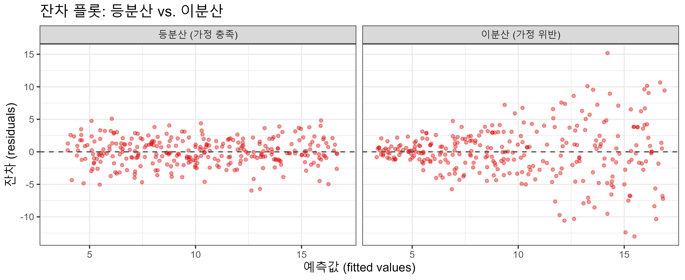
- 등분산: 잔차가 예측값 수준에 관계없이 일정한 폭으로 퍼짐
- 이분산: 잔차의 폭이 예측값이 커질수록 넓어짐 → SE 추정 부정확
Task 3
교육과 성별이 임금에 미치는 효과 분석.
Step 1. CPS1985 데이터 로드:
Step 2. log_wage를 gender와 education에 회귀 → reg1 저장 후 계수 해석:
Step 3. gender * education 상호작용 항 추가 → reg2 저장:
genderfemale:education계수를 해석하시오.- 5% 수준에서 유의한가? 10%에서는?
- OVB 관점에서: 이 회귀에서 빠뜨린 중요한 변수가 있을까?
Task 4
불확실성을 시각화해보자.
Step 1. 로그 임금 vs. 교육 연수 산점도에 회귀선 추가:
- 음영 영역(회색 띠)이 무엇을 의미하는가?
Step 2. 부트스트랩 100개로 불확실성 시각화:
set.seed(1)
bootstrap_sample <- CPS1985 |>
rep_sample_n(size = nrow(CPS1985), reps = 100, replace = TRUE)
ggplot(CPS1985, aes(y = log_wage, x = education, colour = gender)) +
geom_point(size = 1, alpha = 0.4) +
geom_smooth(method = "lm", linewidth = 1.5) +
geom_smooth(data = bootstrap_sample, linewidth = 0.2, se = FALSE, alpha = 0.4,
aes(y = log_wage, x = education, group = replicate), method = "lm") +
facet_wrap(~gender) + scale_colour_manual(values = c("darkblue","darkred")) +
guides(colour = "none") + labs(x = "교육 연수", y = "로그 임금")- 얇은 선 100개가 의미하는 것은? 음영 영역과 어떻게 연결되는가?
불확실성 시각화: 100개의 부트스트랩 회귀선
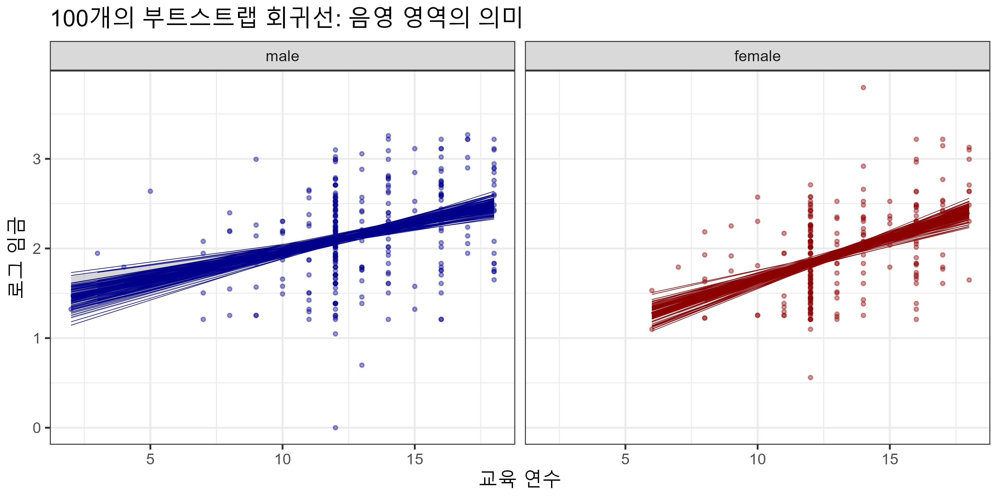
- 얇은 선 하나 = 표본이 달라졌을 때의 회귀선 (불확실성)
- 굵은 선 = 실제 데이터의 OLS 회귀선
- 음영 영역 = 얇은 선들의 95%가 포함되는 범위 = 95% 신뢰 구간
핵심 정리
| 개념 | 정의 | 실전 판독 기준 |
|---|---|---|
| 표준 오차(SE) | \(b_k\) 표본 분포의 SD | 작을수록 추정이 안정적 |
| 검정 통계량 | \(b_k / \hat{SE}(b_k)\) | \(\|t\| > 2\) → 5% 수준 유의 |
| p-값 | \(H_0\) 하에서 이만큼 극단적인 결과가 나올 확률 | < 0.05이면 5% 수준 유의 |
| 95% CI | \(b_k \pm 1.96 \times \hat{SE}(b_k)\) | 0 포함 여부로 유의성 확인 |
| OVB | 누락 변수로 인한 계수 편향 | 관찰 연구에서 항상 의심 |
회귀 분석 결과를 믿기 전 체크리스트:
별(***)이 많은 것보다 가정이 타당한 회귀가 훨씬 가치 있다.
🔍 강의 전체 요약
✅ 데이터 다루기: 읽기(Read) → 정리(Tidy) → 시각화(Visualize)
✅ 관계 요약: 단순/다중 선형 회귀 (OLS)
✅ 불확실성 다루기: 표본이 전부가 아님 → 샘플링, 표준오차, 신뢰구간
✅ 우연인가, 아닌가?: 가설검정, p-값, 통계적 추론
✅ 언제 믿을 수 있는가?: CRM 가정, OVB, 인과추론의 어려움
THE END!
Appendix: infer 파이프라인 전체 코드
# 부트스트랩 분포 (SE, CI 계산용)
bootstrap_distrib <- star_df |>
mutate(small = as.numeric(small)) |>
specify(formula = math ~ small) |>
generate(reps = 1000, type = "bootstrap") |>
calculate(stat = "slope")
# 귀무분포 (순열 검정, p-값 계산용)
null_distribution <- star_df |>
mutate(small = as.numeric(small)) |>
specify(formula = math ~ small) |>
hypothesize(null = "independence") |>
generate(reps = 1000, type = "permute") |>
calculate(stat = "slope") |>
mutate(test_stat = stat / sd(bootstrap_distrib$stat))
# p-값
observed_stat <- coef(reg_star)[2] / sd(bootstrap_distrib$stat)
mean(abs(null_distribution$test_stat) >= observed_stat)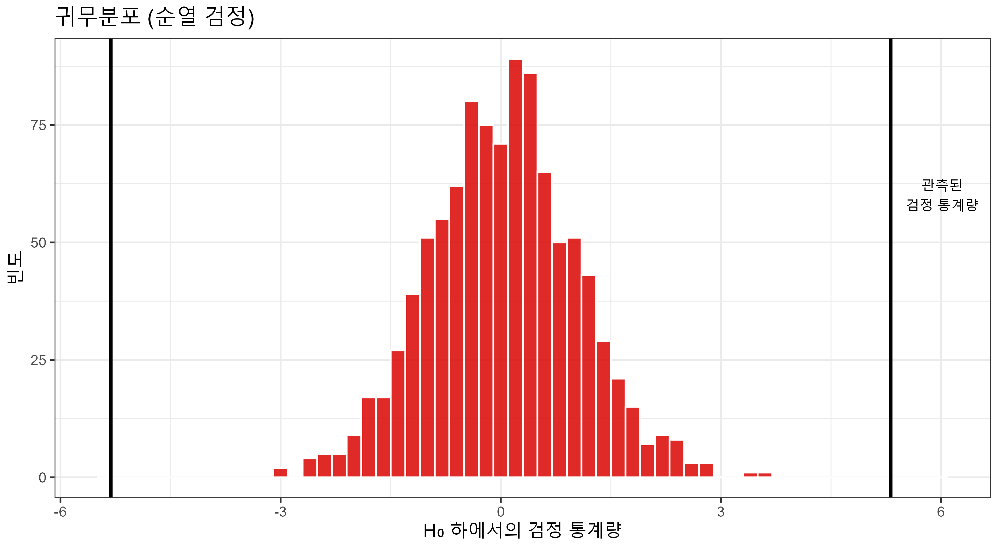